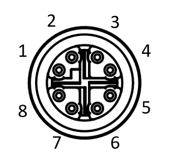

Installing the Camera Hardware¶
Mounting¶
The camera is equipped with seven M3 mounting holes and six M2 mounting holes. One pair of M2 and one pair of M3 holes are present on opposite sides of the lens mount surface. An additional two M2 holes are located on the bottom side of the camera towards the center. This allows the camera to be mounted with Phoenix’s or another standard tripod adapter.
Triton’s M3 mounting holes are recommended to maximize the overall system rigidity when a heavy lens is installed.
| The 4 corner-located M3 mounting holes on the bottom should be used whenever possible for mounting instead of the M2 mounting holes for applications involving vibration as well as applications using the IP67 lens tube. |
Connector¶
The TRI054S camera users x-coded 8pin M12 connector with the following pin mapping as seen from the camera rear view.
{kind=link}
| Pin Number (Camera Side) | Pin Description |
|---|---|
| 1 | BI_DA+ |
| 2 | BI_DA- |
| 3 | BI_DB+ |
| 4 | BI_DB- |
| 5 | BI_DD+ |
| 6 | BI_DD- |
| 7 | BI_DC- |
| 8 | BI_DC+ |
GigE Cable¶
- The TRI054S camera uses x-coded 8 position M12 connector (compliant with IEC 61076-2-109 standard) for Ethernet communication.
- For the best performance, a shielded Ethernet Cat5e or higher should be used. STP shielding is recommended for minimal electromagnetic interference in environments with harsh EMI conditions.
- An unshielded or lower grade/quality Ethernet cable may result in loss of camera connection and/or lost and inconsistent image data.
- The maximum cable length from camera to host with no switch or repeater in between is 100 meters.
- Lucid Vision Labs recommends using qualified Ethernet cables from our web store.
GPIO Cable¶
The TRI054S camera is equipped with an 8-pin General Purpose Input/Output (GPIO) connector at the back.
- Lucid cameras are designed to use shielded or unshielded Ethernet cables.
- When using a shielded GPIO cable in an industrial setting care must be taken to prevent ground loops from forming between Camera chassis, Ethernet PoE power sourcing equipment, IT infrastructure, and devices connected to GPIO.
- The GPIO cable can be shielded if terminated properly. With improper GPIO shield termination scheme, it can cause substantial EMC emissions and immunity issues, induce noise, and cause damage to the camera or equipment attached to the GPIO cable. Using a shielded GPIO cable requires careful consideration of the system level EMC when shielded Ethernet cables and PoE power are used.
- Only use shielded GPIO cables when powering the camera through GPIO, and paying attention to the power supply earth connection, and to the Ethernet shielding termination - ideally AC-coupling the Ethernet shield at the host chassis, or using UTP cable.
- Any GPIO cable with M8 connector compliant with IEC 61076-2-104 will work. An example connector that mates with TRI054S is Phoenix Contact Part Number 1424237.
- Recommended wire thickness is AWG26 or AWG28.
- Lucid Vision Labs recommends using qualified GPIO cables from our web store.
| Consult the GPIO Characteristics section for a GPIO pinout diagram. |
{kind=link}
Lens¶
C mount lens¶
C mount lenses can be used on a C mount camera. According to standard, the C mount flange back distance is 17.53 mm.
Compact C mount lens¶
The compact C mount lens, NF120-5M-C, available in the Lenses section of the Lucid webstore. can be attached to a TRI054S to allow smaller designs.
| Note about using a heavy lens with the camera. | |
Mounting a heavy and long lens may cause damage to the camera board. If the lens is considerably heavier than the camera, the lens’ weight may exert significant force on the lens mount attached to the camera’s board causing unexpected damage to the board and soldered components. If a heavy lens is necessary for the production environment, it is recommended to use the lens as a mounting point rather than the camera to avoid damage to the camera.
IP67 Rating¶
This section describes the parts required to achieve the IP67 rating for TRI054S.
IP67 Cables¶
Use IP67-rated cables with your TRI054S to keep dust and water out of the connection ports.
| Custom cables must be qualified by the integrator to maintain the IP67 rating. |
Find IP67-rated GigE and GPIO cables in the Cables section of the Lucid web store.
GPIO Plug¶
When the GPIO port on the TRI054S is not in use, you must attach the GPIO plug to achieve the IP67 rating.
Lens Tube¶
Without a lens tube, the TRI054S achieves the IP50 rating, which is protection against dust but not water. With a lens tube from Lucid Vision Labs, the TRI054S achieves the IP67 rating, which is dust proof and water resistant.
| Custom lens tubes must be qualified by the integrator to maintain the IP67 rating. |
Adapter Ring¶
The adapter ring is used to attach a lens tube onto the camera. When attaching the adapter ring, the C-mount barrel on the TRI054S should also extend past the ring by approximately 0.3mm.
| Use a rubber piece such as the Multipurpose Neoprene Rubber Strip from McMaster-Carr (part number 1372N13) to assist in removing the adapter ring. |
IP67 Kit¶
The IP67 kits from Lucid Vision Labs for TRI054S consists of:
- An adapter ring with O-ring installed
- A lens tube
Find the IP67 kits from Lucid Vision Labs in the Lens Tubes section of the Lucid webstore.
| Pair the NF120-5M-C compact C mount lens with the IPT-NFC46 lens tube to create a small IP67-rated device. Note optical format of the camera used. |
| The camera is not waterproof. It should not be submerged under water for longer than 30 minutes. |